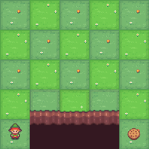
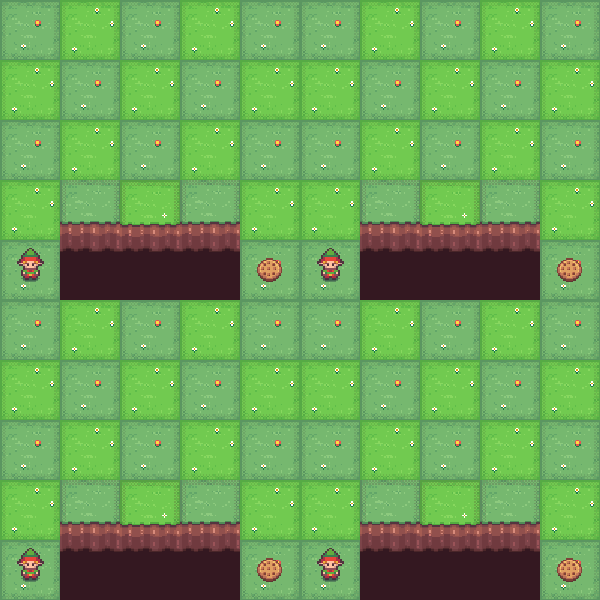
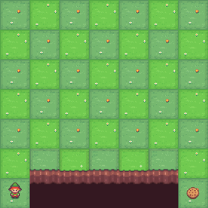
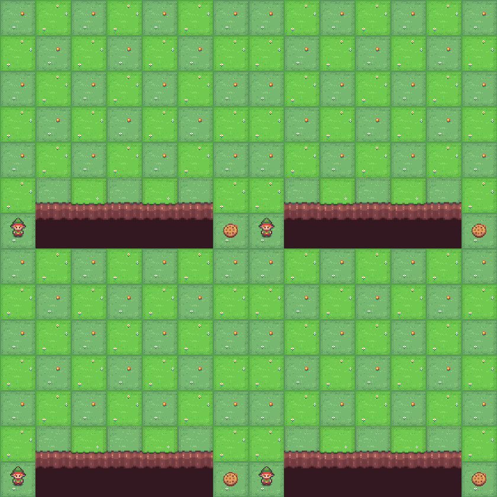
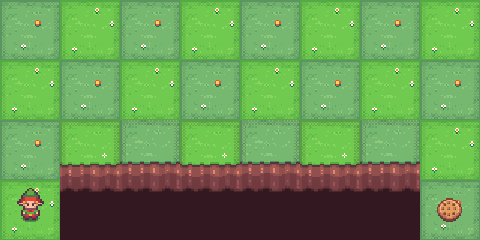
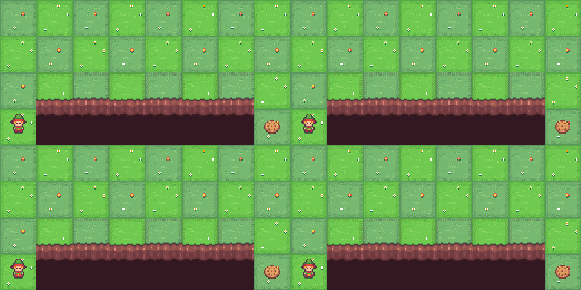
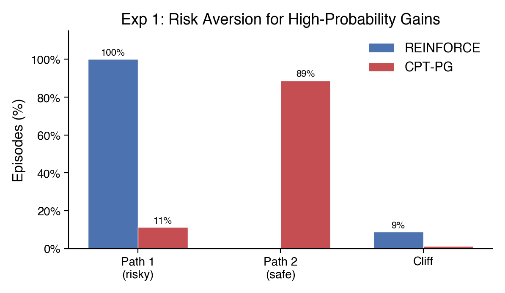
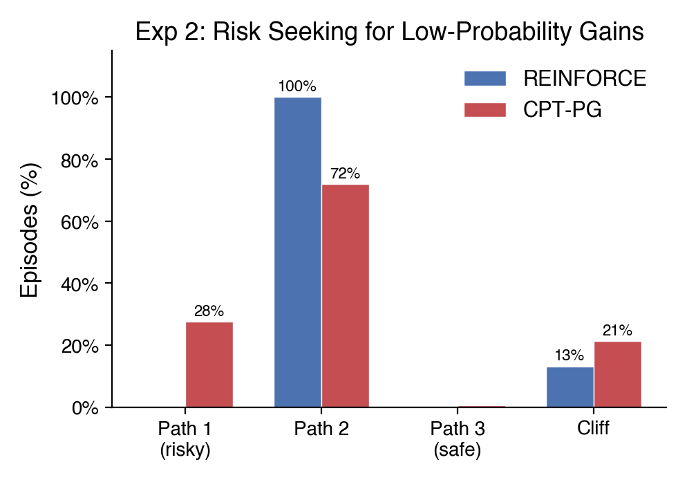
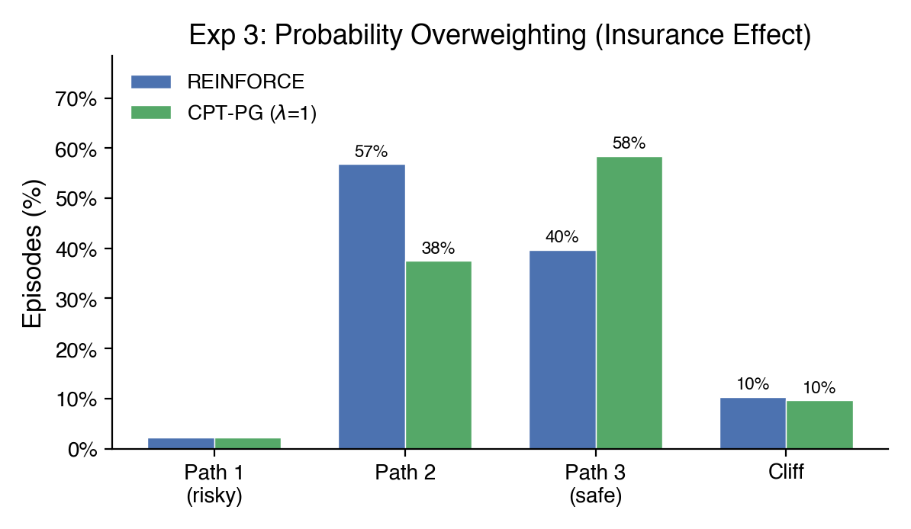
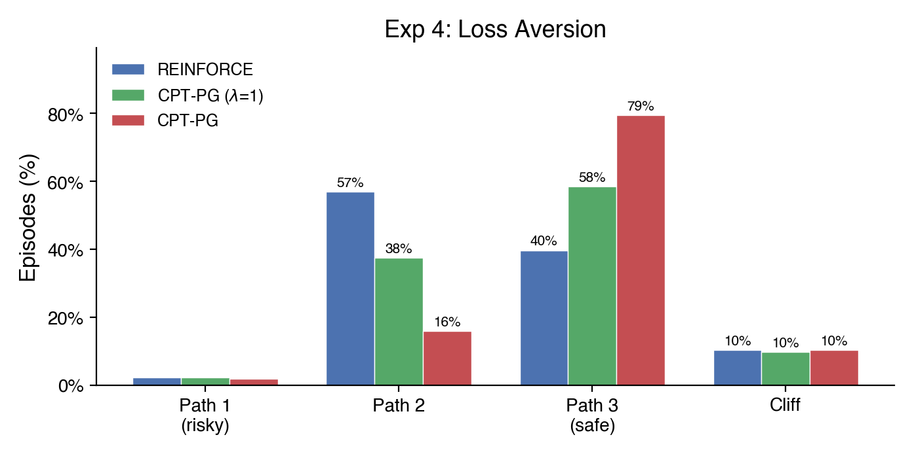

Current AI systems are undoublty making decisions and performing actions that humans usually do. How those decisions are made is likely to be pretty different though. Reinforcement Learning models are usually trained to maximize an expected return, while Language Models are trained with large amounts of digital data and then aligned to perform as useful assistants with methods like SFT, RLHF, and RLVR. The result is an assistant that is indeed useful and rational, in most cases. Human decision making on the other hand, while still largely a black box, has common demonstrations of irrationality and biases, with experiments replicating the results for multiple populations and decision making scenarios.
In this post we compare the decision making of some AI systems (Reinforce, GPT-5-mini) with the average expected behavior of humans making decisions under risk. We will talk about the technical details on the next section, for now just try to put yourself in the position of the agent and imagine how you would make the decision.
The Setup
You are controlling an agent in a grid world. Your goal is to reach the target position on the other side. The bottom edge of the grid is a cliff, fall off and the episode ends. At each step, a random wind may push you one row downward toward the cliff. Higher rows are safer (farther from the edge) but require more steps, which can be penalized. The central question: which path do you choose?
Experiment 1: The Certainty Effect

5x5 grid. Reaching the goal pays +100, falling off the cliff gives only +5. Light wind (5% chance each step). Each extra step shrinks your final reward by about 10% (γ = 0.90). Which path would you take?

REINFORCE takes the risky shortcut every time, it’s the highest expected reward. CPT-PG plays it safe: the certainty effect makes humans risk-averse when a good outcome is likely, why gamble when you can lock in a sure win? The LLM also plays it mostly safe, behaving more like a cautious human than a rational optimizer.
Experiment 2: The Gamble

7x7 grid. Each step costs −1 and future rewards are discounted by 10% per step (γ = 0.90), reaching the goal pays +100, falling gives only +3. Strong wind (11%). The safe path is reliable but long, locking in a moderate loss from accumulated step costs. The short risky path could break even, but the wind makes falling likely. Which path would you take?

REINFORCE always plays safe, the expected value says don’t gamble. CPT-PG takes the risky path 28% of the time: the reflection effect, when facing a near-certain loss, humans prefer to gamble rather than accept it. The LLM sticks with the safe path like REINFORCE, sometimes going even safer, and rarely gambling.
Experiment 3: The Insurance Policy

4x8 grid. Everything costs you: each step −1, reaching the goal −1, falling off the cliff −30, and moderate wind (10% chance each step). Which path would you take?

REINFORCE finds the middle ground, a moderate path balances step costs against cliff risk. CPT-PG with no risk aversion overweights the small cliff probability: the insurance effect — the rare catastrophe feels more dangerous than it is, pushing the agent to safety. Turn up loss aversion (\(\lambda = 2.25\)) and the shift grows — a loss now feels more than twice as bad as an equivalent gain feels good, making even small risks intolerable. The LLM lands between the two CPT variants, taking the safest path 70% of the time.
How It Works
The Grid World
Our environment is a resizable grid world built on top of Gymnasium’s CliffWalking. The agent starts at the bottom-left and must reach the bottom-right (the goal). The bottom row is the cliff: falling off ends the episode with a configurable penalty. Wind is a stochastic perturbation — at each step, with probability wind_prob, the agent’s action is replaced with a downward push toward the cliff. Higher rows are safer but require more steps to traverse. Rewards for stepping, reaching the goal, and falling off the cliff are all independently configurable, letting us construct pure gains domains (positive goal, zero step cost), pure losses domains (negative step cost, negative cliff penalty), and mixed domains.
REINFORCE: The Rational Agent
REINFORCE is a Monte Carlo policy gradient algorithm. The agent runs complete episodes, computes discounted returns \(G_t = \sum_{k=0}^{T-t} \gamma^k r_{t+k}\), and updates its policy by ascending the gradient \(\nabla_\theta J = \mathbb{E}\left[\sum_t (G_t - b) \nabla_\theta \log \pi_\theta(a_t|s_t)\right]\). An exponential moving average baseline \(b\) reduces variance. Entropy regularization encourages exploration early and is annealed down during training. The policy network is a two-layer MLP mapping one-hot state encodings to action probabilities. This is the “rational” agent: it converges to the policy that maximizes expected discounted return.
Cumulative Prospect Theory
Cumulative Prospect Theory models four systematic deviations from rational choice:
- Diminishing sensitivity: The value function is concave for gains and convex for losses (\(v(x) = x^\alpha\) for \(x \geq 0\), \(v(x) = -\lambda|x|^\beta\) for \(x < 0\)), so each additional dollar matters less.
- Loss aversion: Losses are amplified by \(\lambda \approx 2.25\), so losing $100 feels as painful as gaining $225 feels good.
- Probability weighting: Small probabilities are overweighted and large probabilities are underweighted via \(w(p) = p^\gamma / (p^\gamma + (1-p)^\gamma)^{1/\gamma}\).
- Reference dependence: Outcomes are evaluated as gains or losses relative to a reference point, not in absolute terms.
These four components predict a specific pattern of risk attitudes: risk-averse for likely gains, risk-seeking for likely losses, and risk-averse for unlikely losses, amplified further by loss aversion. Though individual behavior may vary, the patterns are consistent across populations and have replicated in experiments over the years.
CPT-PG: Combining Cumulative Prospect Theory ideas with Policy Gradient learning methods
CPT-PG (Lepel & Barakat, 2024) replaces REINFORCE’s raw returns with CPT-distorted weights \(\hat{\varphi}\) computed from the batch of trajectories. For each episode \(i\), the algorithm computes the discounted return \(R_i\), applies the CPT value function to split it into gains \(u^+\) and losses \(u^-\) relative to the reference point, then integrates against the probability-weighted empirical survival function to obtain \(\hat{\varphi}(R_i)\). This scalar replaces \(G_t - b\) in the policy gradient. Our experiments use Tversky and Kahneman’s original parameter estimates: \(\alpha = \beta = 0.88\), \(\lambda = 2.25\), \(\gamma^+ = 0.61\), \(\gamma^- = 0.69\).
The center_phi normalization subtracts the batch mean \(\hat{\varphi}\) to ensure the CPT-induced preference ordering is preserved even in pure domains where all \(\hat{\varphi}\) values would otherwise have the same sign.
Technical challenges
Adapting CPT risk evaluation to Reinforcement Learning is challeging even with the great progress made by Lepel & Barakat (2024) and other authors, which is mainly due to the fact that the original CPT theory was developed evaluation of complete outcomes, while RL operates on a per-step basis. Some of the main challenges we faced in this process were:
- The value function in CPT is not additive, which limits our ability to use the Bellman equation and other RL techniques.
- The probability distortions requires us to know (or approximate) the explicit outcome distribution, which requires additional work and approximations.
- In CPT-PG we broadcast the CPT-distorted return to all steps in the episode, making it harder to learn and blurring the credit assignment for important decisions.
- It’s not always clear how multiple different factors in a sequential decision making and learning scenario interact and what the final risk attitude will be.
- Most of the experiments we wanted to run required changes to the original cliff walking environment, including adding wind, changing the reward structure, and changing the grid size. In mostly positive domains, the discounted factor was specially important to create a balance between risky and safe prospects.
Results
The three experiments show significant behavioral shifts in the directions predicted by CPT. Each agent was trained across multiple seeds and evaluated over 20 episodes per seed.
Experiment 1 - The Certainty Effect: REINFORCE locks onto the riskiest path (Path 1 = 100%). CPT-PG shifts toward safety (Path 2 = 89%). Mann-Whitney p = 0.020, Cohen’s d = 16.7.

Experiment 2 - The Gamble: REINFORCE always plays safe (Path 2 = 100%). CPT-PG gambles on the risky path 28% of the time (Path 1 = 28%, Path 2 = 72%). t-test p = 0.000001, Cohen’s d = 4.04.

Experiment 3 - The Insurance Policy: REINFORCE favors the moderate path (Path 2 = 57%). CPT-PG with \(\lambda = 1.0\) shifts toward the safest path (Path 3 = 58%). Mann-Whitney p = 0.009, Cohen’s d = 1.07. Adding loss aversion (\(\lambda = 2.25\)) amplifies the shift dramatically (Path 3 = 79%). CPT(\(\lambda\)=1.0) vs CPT(\(\lambda\)=2.25): p = 0.005, d = 1.18. Full CPT vs REINFORCE: p = 7.4 \(\times\) 10-6, d = 2.38.


Conclusions
AI agents learn to behave in a different way than humans do, which is likely to generate difference in some of the decisions they make. Even large post trained language models are aligned to be useful assistants, which differs from humans expected behavior and goals. In the experiments we can see a few examples of how those differences manifest themselves in toy risk environments. It’s pretty plausible that these are also manifesting in more diffuse and important decisions every day as we relegate more work to AI agents, which is why this is an important topic to explore.
However, the limited scope of Cumulative Prospect Theory, and the challenges of adapting it to Reinforcement Learning may not make it the better fit at the moment to map AI decision making to human expected behavior. Other interesting work like https://arxiv.org/abs/2602.03545 and https://huggingface.co/papers/2602.13949 is definitely worth exploring.
The code for all experiments is available at https://github.com/santiagomvc/ai-behavior-under-risk.
References
- Tversky, A., & Kahneman, D. (1992). Advances in prospect theory: Cumulative representation of uncertainty. Journal of Risk and Uncertainty, 5(4), 297-323.
- Kahneman, D., & Tversky, A. (1979). Prospect theory: An analysis of decision under risk. Econometrica, 47(2), 263-292.
- Lepel, T., & Barakat, A. (2024). CPT-PG: Cumulative Prospect Theory in Policy Gradient. arXiv:2410.02605.
- Williams, R. J. (1992). Simple statistical gradient-following algorithms for connectionist reinforcement learning. Machine Learning, 8(3), 229-256.